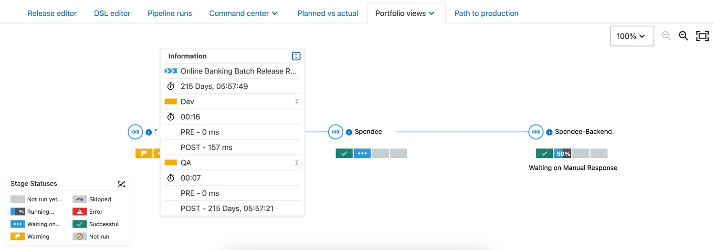
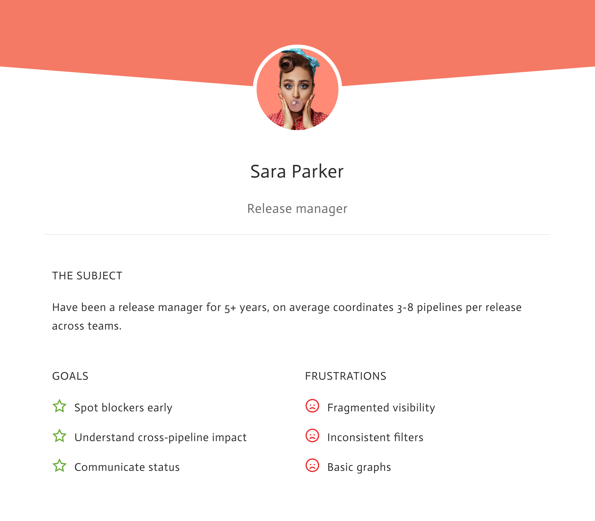
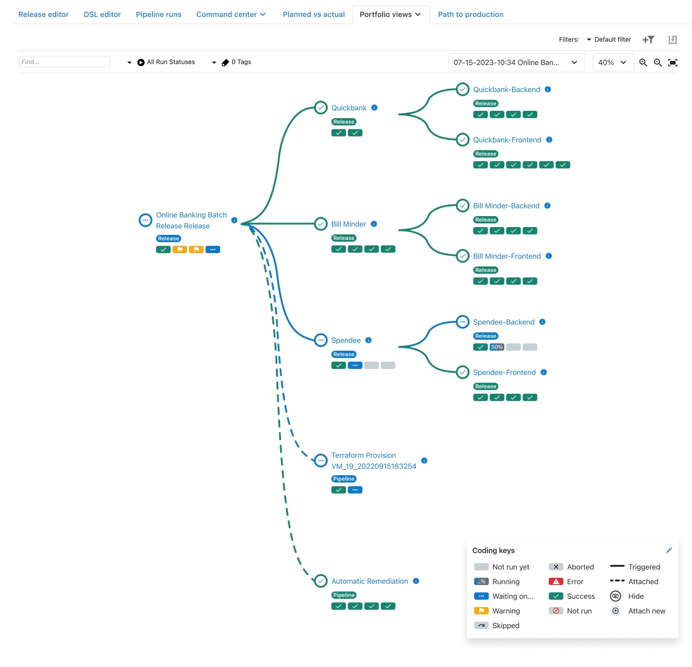
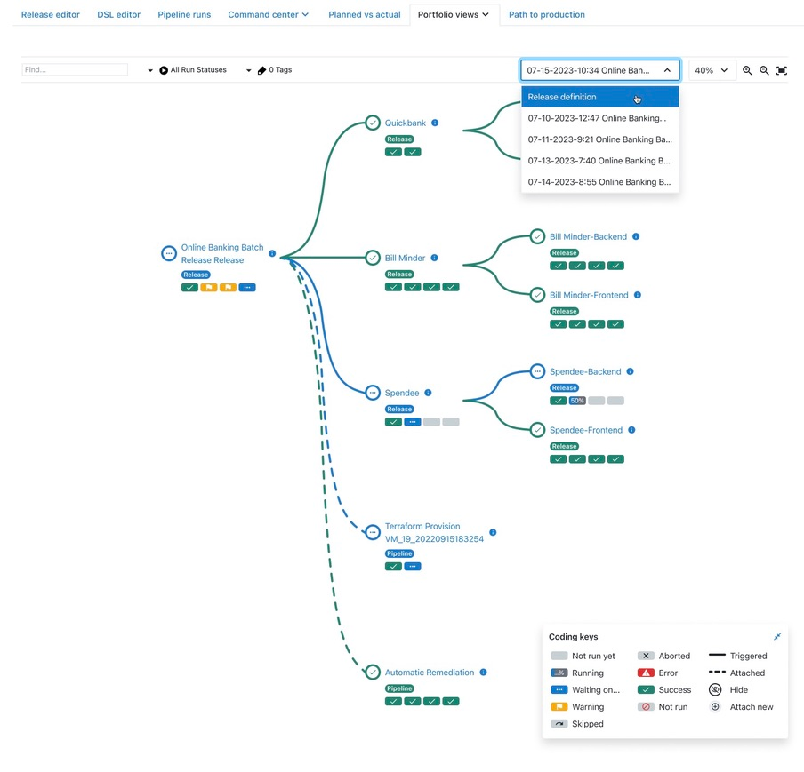
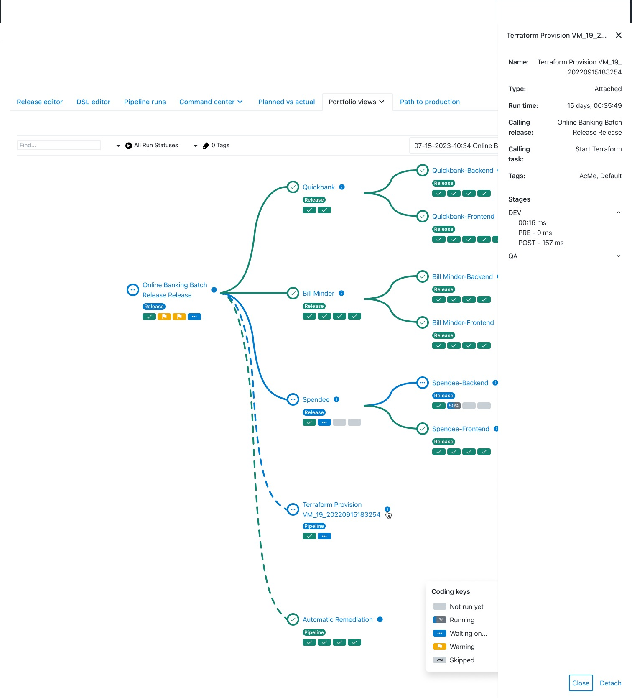
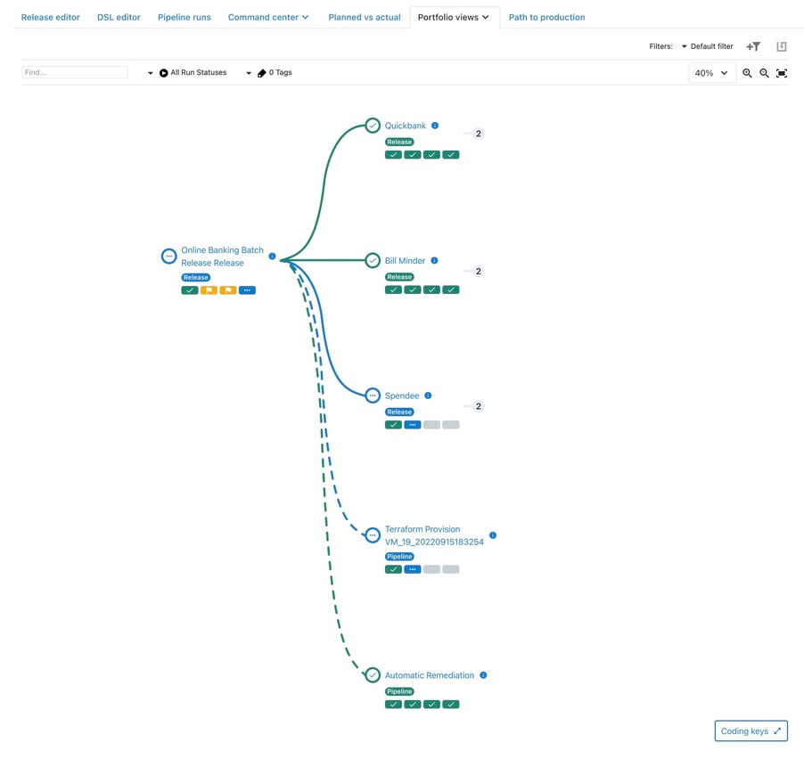

Release managers couldn't see what was actually in their release — so blockers stayed hidden until it was too late.
Redesigning the release portfolio view to give release managers full pipeline visibility across triggered, sub-release, and attached associations.
UX/UI Designer
Heuristic evaluation, cognitive walkthrough, proto-persona, task scenarios
Figma
No access to end users during this iteration
Background
The product supports three association types between pipelines and releases: Triggered (pipelines trigger other pipelines via tasks), Sub-release (releases manually added under a parent), and Attached (pipeline runs attached to a release).
The existing portfolio view only showed Triggered pipelines — obscuring the full picture. Release managers had no single view of everything associated with their release, making it impossible to identify blockers quickly.
Key UX Issues
- Invisible scope coupling — What appears in portfolio views depends on selections made elsewhere in the app, but this is never communicated. Filters and data seem unpredictable.
- Context switching pain — Checking different pipeline runs within a release is cumbersome. Definition vs. runtime portfolios differ without explanation.
- Ambiguous sub-release list — The sub-release dropdown doesn't distinguish triggered vs. manually added items.
- Visual complexity — Stakeholders asked for the ability to collapse branches in the graph to manage noise.


Approach
Conducted heuristic evaluation (Nielsen's 10) and cognitive walkthrough with internal stakeholders
Built proto-persona and task scenarios to frame design decisions
Researched common DevOps portfolio patterns for prior art
Designed solutions addressing each identified issue, iterated with stakeholder feedback

Design Solutions
Unified coding keys for all association types
Portfolio now renders Triggered, Sub-release, and Attached items together. A legend with badges identifies each type: Triggered (solid line), Sub-release (badge), Attached (dotted line).
Release managers can finally see the full scope of their release in one view without guessing what's missing.

Snapshot dropdown for pipeline run context
Provides full visibility of the workflow process inline. Users can see at what point something went wrong without leaving the page.
Eliminates the need to context-switch to a different section of the app to check on pipeline runs — faster blocker discovery.

Type chips and contextual info for every item
Each item shows a chip indicating its type (pipeline, sub-release). An info icon reveals full details — including what entity called it and which task triggered it.
Users can search and scan faster. No more guessing the relationship between items in the graph.

Collapse/expand for noise reduction
Branches in the graph can be collapsed when only a certain part of the release needs attention.
Complex releases with many branches become manageable. Users focus on what matters without visual overload.

Outcome
By making scope explicit, unifying association types in both graph and list views, and introducing collapse/expand patterns, the release portfolio becomes a trustworthy control panel rather than a static diagram.
What's Next
Given the absence of external user testing, outcomes are framed as hypotheses. The next step is to validate through lightweight usability studies and product analytics, then iterate on areas with highest impact — such as blocker panel effectiveness and saved views adoption.